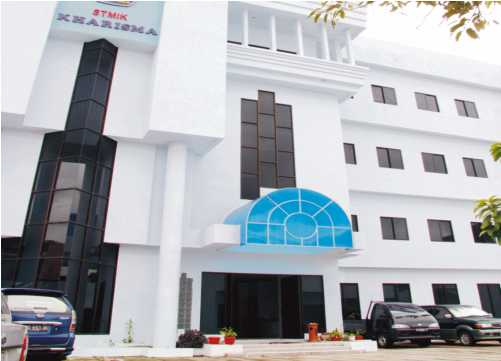

Tentang Kharisma

STMIK Kharisma Makassar merupakan salah satu kampus favorit calon mahasiswa baru di Sulawesi Selatan.Lokasinya berada di Jalan Baji Ateka No 20 90121 Sulawesi Selatan, Indonesia. Dengan tenaga pengajar profesional, STMIK Kharisma Makassar mampu menjadikan lulusan memiliki skill dan pengetahuan yang cukup luas. Selain itu, kampus telah dilengkapi dengan sarana dan prasarana pembelajar yang memadai, sehingga memungkinkan mahasiswa dapat fokus belajar demi menggapai asa.
Visi STMIK KHARISMA Makassar 2029
Menjadi Perguruan Tinggi yang Unggul di Bidang Digital Entrepreneur
Misi
- menyelenggarakan tata kelola dan kelembagaan yang mengacu pada sistem penjaminan mutu yang unggul.
- melaksanakan pendidikan dan pengajaran yang berwawasan digital entrepreneur, berdaya saing, dan berkarakter.
- melaksanakan penelitian secara terprogram dan teratur dalam bidang digital entrepreneur.
- melaksanakan pengabdian kepada masyarakat dalam bidang digital entrepreneur.
Tujuan
- mencapai peringkat akreditasi institusi yang unggul.
- menghasilkan lulusan yang berwawasan digital entrepreneur.
- menghasilkan lulusan yang memiliki daya saing.
- menghasilkan lulusan yang berkarakter.
- meningkatkan kualitas dan kuantitas penelitian dan publikasi ilmiah di bidang digital entrepreneur.
- meningkatkan kualitas dan kuantitas kegiatan pengabdian kepada masyarakat dalam bidang digital entrepreneur yang bermanfaat bagi masyarakat.
- meningkatkan kerja sama penelitian dan pengabdian kepada masyarakat dalam bidang digital entrepreneur.
- meningkatkan kualitas sumber daya dosen dan tenaga kependidikan.